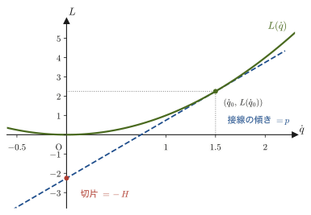
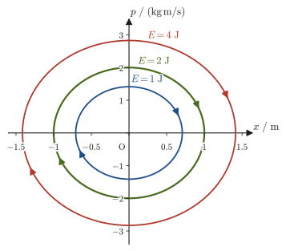
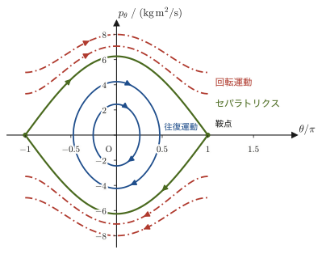
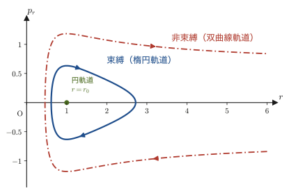

第45章ハミルトンの正準方程式と位相空間
第43章と第44章で学んだラグランジュ形式は，一般化座標 $q_i$ と，その時間微分（一般化速度）$\dot q_i$ を主人公として運動を記述するものであった．運動方程式（ラグランジュ方程式）は各 $q_i$ について2階の微分方程式であり，解くには $q_i(t)$ とともに $\dot q_i(t)$ の情報が必要になる．この章では，主人公を $\dot q_i$ から，一般化運動量 $p_i=\partial L/\partial \dot q_i$（第43章）に付け替えることで，力学をまったく違う姿に書き直す——ハミルトン形式（Hamiltonian formalism）である．ラグランジュ形式が「$n$ 個の2階微分方程式」であったのに対し，ハミルトン形式は「$2n$ 個の1階微分方程式（正準方程式）」になる．方程式の本数は倍になるが，1本ずつは単純な1階微分方程式であり，しかも $(q_i,p_i)$ の組（位相空間，phase space）を舞台にすると，運動のようすを驚くほど見通しよく図示できるようになる．
「$\dot q_i$ を $p_i$ に付け替える」という操作は，実は物理のあちこちに現れる汎用的な数学的手続きであり，ルジャンドル変換（Legendre transformation）と呼ばれる．驚くことに，これは熱力学で内部エネルギー $U(S,V)$ からエンタルピー $H(S,p)$・ヘルムホルツ自由エネルギー $A(T,V)$・ギブスエネルギー $G(T,p)$ をつくる操作（第31章 31.5節）とまったく同じ数学である．「ある変数を，それに共役な量に取り替えて，情報を一切失わずに関数を書き直す」——この考え方を，本章ではまず解析力学の文脈で一から丁寧に構築する．
本章では，解析力学の完成形であるハミルトン形式——ルジャンドル変換によるハミルトニアンの定義，正準方程式の導出，位相空間という新しい舞台——を，ゼロから組み立てる．この内容は第VII部（統計力学）と別教材の量子力学の出発点にもなる．
- ルジャンドル変換の一般論（1変数の場合）と，それを使ったハミルトニアン $H(q,p,t)=\sum_i p_i\dot q_i-L(q,\dot q,t)$（$\dot q_i$ を $p_i$ の関数として消去したもの）の定義
- $H$ の全微分と $L$ の全微分を比較することによる，ハミルトンの正準方程式 $\dot q_i=\partial H/\partial p_i,\ \dot p_i=-\partial H/\partial q_i$ の導出
- 時間に陽によらない束縛のもとでは $H=T+U$（力学的エネルギー）になること（成り立たない場合の例も），および $\dd H/\dd t=\partial H/\partial t$ からエネルギー保存則を導くこと
- 調和振動子・単振り子・惑星運動をハミルトン形式で書き直し，ラグランジュ形式（第44章）・ニュートン形式（第7章・第8章）の結果と一致することの確認
- 位相空間 $(q,p)$ と相軌道の概念，調和振動子の楕円軌道・単振り子のセパラトリクスの図示
- 巡回座標（ハミルトニアンに陽に現れない座標）に対応する運動量が保存すること
もとにしたノート：望月泰英『物理学ノート 解析力学』 p. 10．
45.1 一般化運動量からハミルトニアンへ — ルジャンドル変換
第43章で学んだように，$n$ 個の自由度をもつ系の一般化座標を $q_1,\ldots,q_n$（まとめて $q$），その時間微分（一般化速度）を $\dot q_1,\ldots,\dot q_n$（まとめて $\dot q$．$\dot q_i=\dd q_i/\dd t$）とすると，ラグランジアン $L=L(q,\dot q,t)$ に対して一般化運動量は
$$ p_i\equiv\pdiff{L}{\dot q_i}\qquad(i=1,\ldots,n) $$で定義される．ラグランジュ形式では，$(q_i,\dot q_i)$ の組——配位空間（configuration space）とその「速度」——を使って運動を記述してきた．本節では，$\dot q_i$ の代わりに $p_i$ を使って運動を記述し直すための数学的な手続きを準備する．
45.1.1 なぜ $\dot q_i$ を $p_i$ に「主役交代」させるのか
ラグランジュ方程式 $\dd(\partial L/\partial\dot q_i)/\dd t-\partial L/\partial q_i=0$（第43章）は，$\dot q_i=\dd q_i/\dd t$ を含む2階の微分方程式である．2階の微分方程式を数値的に解くとき，あるいはその解の構造を調べるときには，しばしば「1階の微分方程式をたくさん並べた形」に書き直すと見通しがよくなる（例えば $\ddot x=f(x,\dot x)$ を，$v\equiv\dot x$ とおいて $\dot x=v,\ \dot v=f(x,v)$ という1階の連立方程式に直す，という経験があるかもしれない）．ハミルトン形式は，この「1階化」を単なる置き換えではなく，$\dot q_i$ という速度の役割を，運動量 $p_i$ という新しい独立変数に完全に譲り渡すことによって実現する．なぜ $\dot q_i$ をそのまま使わず，わざわざ運動量 $p_i$ に置き換えるのか．単に1階の方程式にしたいだけなら $v=\dot x$ を使えば済むので，ハミルトン形式の利点はそれとは別のところにある．
- 方程式が対称で，1つの関数からすべて出る：$\dot q_i=\partial H/\partial p_i,\ \dot p_i=-\partial H/\partial q_i$ のように，$q$ と $p$ が（符号を除いて）対等な形で現れる．$H$ という1本の関数を決めれば，$2n$ 本の方程式がすべて決まる（45.2節）．
- 保存則が一目でわかる：$H$ に現れない座標があれば，その座標に対応する運動量が保存する（45.6節）．
- 運動を図に描ける：$(q,p)$ を軸とする平面（位相空間）に運動の軌道を描くと，運動の全体像が見通せる（45.5節）．この見方は，統計力学や量子力学の出発点にもなる（第46章，第VII部，別教材）．
いまはまず，その置き換えの数学的な中身を正確に理解することに集中しよう．
45.1.2 ルジャンドル変換（1変数の場合）
$\dot q_i$ を $p_i$ に置き換える操作の数学的な名前は，ルジャンドル変換（Legendre transformation，ルジャンドルは18–19世紀フランスの数学者アドリアン=マリ・ルジャンドル，Adrien-Marie Legendre）という．驚くべきことに，まったく同じ数学が熱力学にも現れる——内部エネルギー $U(S,V)$ から，独立変数 $V$ をその共役な量 $-p$（圧力）に取り替えてエンタルピー（enthalpy）$H(S,p)=U+pV$ をつくる操作（この $H$ は「エンタルピー」，$p$ は「圧力」である），あるいは $S$ を $T$（温度）に取り替えてヘルムホルツ自由エネルギー $A(T,V)=U-TS$ をつくる操作は，第31章 31.5節で見たとおり，どちらもルジャンドル変換である．まずは1変数の場合の一般論を確認し，そのあとで $\dot q_i\to p_i$ の場合に適用する．
注意：$H$ と $p$ の二重の意味，そして符号
熱力学の $H$（エンタルピー），$p$（圧力）と，解析力学の $H$（ハミルトニアン），$p_i$（運動量）はまったく別の量である．同じ数学（ルジャンドル変換）から生まれた量なので，たまたま同じ文字が使われているにすぎない．本章では，特に断らない限り $H$ はハミルトニアン，$p_i$ は一般化運動量を表す．また，第31章で見たように，熱力学の $A=U-TS$ や $H=U+pV$ は，下で定義する $g=px-f$ と符号が反対（$-g$）である．これに対し，ハミルトニアン $H=\sum_ip_i\dot q_i-L$ は $g$ と同じ符号（$f\to L$）で，符号を反転しない．
1変数関数 $f(x)$（下に凸，すなわち $f''(x)\gt0$ とする）について，接線の傾き $p\equiv f'(x)$ を新しい変数にとり，
\begin{equation} g(p)\equiv p\,x-f(x) \label{eq:45-legendre-general} \end{equation}をつくる操作（右辺の $x$ は $p=f'(x)$ を解いた $x=x(p)$ を代入する）が，第31章 定義31.2で学んだルジャンドル変換そのものである．詳しい導出と，「$f$ を $p$ の関数に書き直しただけでは $x$ の情報が失われるが，$g$ は失わない」という説明は第31章31.5節にあるので，ここでは結論だけを確認する．積の微分法則と連鎖律で $g$ を $p$ で微分すると，$\dd g/\dd p=x+p\,\dd x/\dd p-f'(x)\,\dd x/\dd p=x$（$f'(x)=p$ で第2項と第3項が打ち消し合う）となり，$x=\dd g/\dd p$ から $x$ が復元でき，$f=px-g$ と完全に元へ戻せる．
イメージ：接線の切片としてのルジャンドル変換
図45.1のように，曲線 $y=f(x)$ の接線の $y$ 切片は $f(x_0)-p x_0=-g(p)$ であり，接線の傾き $p$ を動かすと，切片の符号を反転した値が $g(p)$ をなぞる（第31章31.5節と同じ解釈）．本章では $f\to L(\dot q)$，$x\to\dot q$，$g\to H(p)$ と読み替える．

例題45.1 1変数のルジャンドル変換
$a=2$ として，$L(\dot q)=\tfrac12 a\dot q^2$ の $\dot q_0=1.5$ における接線の傾き $p$ と，ルジャンドル変換の値 $H=p\dot q_0-L(\dot q_0)$ を求めよ．また，一般の $\dot q_0$ に対して $H$ を $p$ の関数として表せ．
解答 傾きは $p=\dd L/\dd\dot q=a\dot q_0=2\times1.5=3$．$L(\dot q_0)=\tfrac12\times2\times1.5^2=2.25$．よって，
$$ H=p\dot q_0-L(\dot q_0)=3\times1.5-2.25=4.5-2.25=2.25 $$一般の $\dot q_0$ については，$p=a\dot q_0$ より $\dot q_0=p/a$ なので，
$$ H=p\dot q_0-\frac12 a\dot q_0^2=p\cdot\frac{p}{a}-\frac12 a\left(\frac{p}{a}\right)^2=\frac{p^2}{a}-\frac{p^2}{2a}=\frac{p^2}{2a} $$となる．$L=\tfrac12 a\dot q^2$ が $H=p^2/(2a)$ という形に変わったことに注意しよう——のちに45.2節で見るように，これはちょうど「運動エネルギー $\tfrac12 m\dot x^2$ が $p^2/(2m)$ に書き直される」ことに対応する（$a\to m$）．
45.1.3 ハミルトニアンの定義
ここで，第46章 46.1節で詳しく扱う量として，エネルギー関数 $h\equiv\sum_i\dot q_i\,\partial L/\partial\dot q_i-L$ がある（$L$ が時間に陽によらないとき保存する量）．$p_i=\partial L/\partial\dot q_i$ を使えば，これは $h=\sum_ip_i\dot q_i-L$ と書き直せる．この量を，$(q,\dot q,t)$ の関数としてではなく $(q,p,t)$ の関数として書き直したものが，次に定義するハミルトニアン $H$ である（変数を取り替えただけで，値は同じ）．
いま準備した1変数のルジャンドル変換を，$n$ 個の変数 $\dot q_1,\ldots,\dot q_n$ について同時に（他の変数 $q_i,t$ は固定したまま）行う．$x\to\dot q_i$，$f(x)\to L(q,\dot q,t)$，$p\to p_i=\partial L/\partial\dot q_i$ の対応で，式 \eqref{eq:45-legendre-general} の和をとればよい：
定義45.1 ハミルトニアン
ラグランジアン $L(q,\dot q,t)$ に対して，一般化運動量 $p_i=\partial L/\partial\dot q_i$ を使って $\dot q_i$ を $(q,p,t)$ の関数として消去し（$p_i=\partial L/\partial\dot q_i$ を $\dot q_i$ について解く），
\begin{equation} H(q,p,t)\equiv\sum_{i=1}^n p_i\dot q_i-L(q,\dot q,t) \label{eq:45-H-def} \end{equation}で定義される $q,p,t$ の関数 $H$ をハミルトニアン（Hamiltonian，ウィリアム・ローワン・ハミルトン，William Rowan Hamilton にちなむ）という．右辺の $\dot q_i$ はすべて $p_i=\partial L/\partial\dot q_i$ の逆関数 $\dot q_i=\dot q_i(q,p,t)$ を代入したものであり，$H$ 自体は $\dot q$ を含まない——$\dot q$ の情報はすべて $p$ に移し替えられている．
注意：逆に解けるための条件
$p_i=\partial L/\partial\dot q_i$ を $\dot q_i$ について解くには，写像 $\dot q\mapsto p$ が（少なくとも局所的に）1対1でなければならない．本教材で扱うふつうの力学系（運動エネルギー $T$ が $\dot q_i$ の2次形式で，かつ正定値であるような系）ではこの条件は自動的に満たされる．実際，$T=\tfrac12\sum_{jk}M_{jk}(q)\dot q_j\dot q_k$（$M_{jk}$ は質量行列）のとき，$p_i=\partial L/\partial\dot q_i=\sum_k M_{ik}\dot q_k+(\text{$\dot q$ を含まない項})$ は $\dot q$ について線形であり，$M_{jk}$ が正定値（運動エネルギーが $\dot q\neq0$ で正）である限り逆行列が存在して一意に解ける．
注意：同じ記号の偏微分でも，固定する変数が違う
$\partial L/\partial q_i$ と $\partial H/\partial q_i$ は，どちらも「$q_i$ で偏微分」だが，別のものである．$\partial L/\partial q_i$ は $(q_j\ (j\ne i),\ \dot q,\ t)$ を固定して $q_i$ だけを動かしたときの $L$ の変化率，$\partial H/\partial q_i$ は $(q_j\ (j\ne i),\ p,\ t)$ を固定して $q_i$ だけを動かしたときの $H$ の変化率である．$\dot q$ は $\dot q(q,p,t)$ という $(q,p,t)$ の関数なので，$p$ を固定して $q_i$ を動かすと $\dot q$ も一緒に動く．そのぶんの違いが，次節で得る $\partial H/\partial q_i=-\partial L/\partial q_i$ の符号の反転として現れる．
数学の道具：多変数関数の全微分
次節でハミルトンの正準方程式を導出する際には，$H(q,p,t)$ の全微分 $\dd H=\sum_i(\partial H/\partial q_i)\dd q_i+\sum_i(\partial H/\partial p_i)\dd p_i+(\partial H/\partial t)\dd t$ という表式を使う．これは，多変数関数 $f(x_1,\ldots,x_n)$ の全微分 $\dd f=\sum_i(\partial f/\partial x_i)\dd x_i$（大学数学 第6章 6.3節）を，変数の個数を $2n+1$（$q_1,\ldots,q_n,p_1,\ldots,p_n,t$）に増やしただけのものである．
45.2 ハミルトンの正準方程式の導出
ハミルトニアン $H(q,p,t)=\sum_i p_i\dot q_i-L(q,\dot q,t)$（定義45.1）の全微分を，2通りの方法で計算し，係数を比較する——これがハミルトンの正準方程式を導く標準的な方法である．
導出：ハミルトンの正準方程式
方法1（定義の式を直接微分する）．式 \eqref{eq:45-H-def} の右辺を，積の微分法則を使って微分する．$\dd(p_i\dot q_i)=\dot q_i\,\dd p_i+p_i\,\dd\dot q_i$（$i$ について和をとる）なので，
$$ \dd H=\sum_i\left(\dot q_i\,\dd p_i+p_i\,\dd\dot q_i\right)-\dd L $$である．一方，$L=L(q,\dot q,t)$ の全微分は（大学数学 第6章 6.3節の多変数関数の全微分），
$$ \dd L=\sum_i\pdiff{L}{q_i}\dd q_i+\sum_i\pdiff{L}{\dot q_i}\dd\dot q_i+\pdiff{L}{t}\dd t =\sum_i\pdiff{L}{q_i}\dd q_i+\sum_i p_i\,\dd\dot q_i+\pdiff{L}{t}\dd t $$（第2項で一般化運動量の定義 $p_i=\partial L/\partial\dot q_i$ を使った）．これを1つ目の式に代入すると，
$$ \dd H=\sum_i\dot q_i\,\dd p_i+\sum_i p_i\,\dd\dot q_i-\sum_i\pdiff{L}{q_i}\dd q_i-\sum_i p_i\,\dd\dot q_i-\pdiff{L}{t}\dd t $$となり，$\sum_i p_i\,\dd\dot q_i$ の項が両辺で完全に打ち消し合う．これがルジャンドル変換の本質的な効果である．$\dot q_i$ は $\dot q_i(q,p,t)$ という $(q,p,t)$ の関数なので，$\dd\dot q_i$ は本来 $\dd q,\dd p,\dd t$ の1次結合として書けるはずだが，その係数がちょうど0になり，$\dd H$ の式から $\dd\dot q_i$ が跡形もなく消えるのである．残るのは，
\begin{equation} \dd H=\sum_i\dot q_i\,\dd p_i-\sum_i\pdiff{L}{q_i}\dd q_i-\pdiff{L}{t}\dd t \label{eq:45-dH-step1} \end{equation}方法2（$H$ が $(q,p,t)$ の関数であることから）．一方，$H$ はもともと $q,p,t$ の関数として定義されている（定義45.1）ので，多変数関数の全微分の公式より，
\begin{equation} \dd H=\sum_i\pdiff{H}{q_i}\dd q_i+\sum_i\pdiff{H}{p_i}\dd p_i+\pdiff{H}{t}\dd t \label{eq:45-dH-formal} \end{equation}とも書ける．式 \eqref{eq:45-dH-step1} と式 \eqref{eq:45-dH-formal} は同じ $\dd H$ を2通りの方法で表したものだから，独立な微小量 $\dd q_i,\dd p_i,\dd t$（$q,p,t$ は互いに独立な変数である）の係数はそれぞれ一致しなければならない．$\dd p_i$ の係数どうし，$\dd q_i$ の係数どうし，$\dd t$ の係数どうしを比べると，
$$ \pdiff{H}{p_i}=\dot q_i,\qquad \pdiff{H}{q_i}=-\pdiff{L}{q_i},\qquad \pdiff{H}{t}=-\pdiff{L}{t} $$が得られる（これらは，$H$ と $L$ の関係だけから決まる恒等式であり，運動方程式を使っていない）．2つ目の式の右辺の符号が反対になっていることに注意しよう（前節の注意）．最後に，運動方程式を使う．ラグランジュ方程式 $\dd(\partial L/\partial\dot q_i)/\dd t-\partial L/\partial q_i=0$（第43章）と一般化運動量の定義から，
$$ \pdiff{L}{q_i}=\diff{}{t}\left(\pdiff{L}{\dot q_i}\right)=\diff{p_i}{t}=\dot p_i $$が成り立つ（ラグランジュ方程式が「$\partial L/\partial q_i$ は運動量の時間微分に等しい」と言っている，と読み替えられる）．これを $\partial H/\partial q_i=-\partial L/\partial q_i$ に代入すると $\partial H/\partial q_i=-\dot p_i$ となる．以上をまとめて，
$$ \dot q_i=\pdiff{H}{p_i},\qquad \dot p_i=-\pdiff{H}{q_i}\qquad(i=1,\ldots,n) $$（導出終わり）
定理45.1 ハミルトンの正準方程式
ハミルトニアン $H(q,p,t)$ に対して，運動は次の $2n$ 本の1階連立微分方程式（正準方程式，canonical equations of motion）にしたがう：
\begin{equation} \dot q_i=\pdiff{H}{p_i},\qquad \dot p_i=-\pdiff{H}{q_i}\qquad(i=1,\ldots,n) \label{eq:45-canonical-thm} \end{equation}さらに，副産物として $\partial H/\partial t=-\partial L/\partial t$ が成り立つ——$H$ の時間への陽な依存の仕方は，$L$ のそれとちょうど符号が逆である．
イメージ：構造的な違い — 配位空間と位相空間
ラグランジュ方程式は，$n$ 個の座標 $q_i$ について，それぞれ2階の微分方程式である（第43章）．2階の常微分方程式の一般解には，1つの座標につき2つの任意定数（例えば初期位置 $q_i(0)$ と初期速度 $\dot q_i(0)$）が現れる（大学数学 第35章 35.1節の2階線形微分方程式の一般解の構造，および第7章 7.1節の単振動の一般解 $x=C_1\cos\omega t+C_2\sin\omega t$（任意定数2個）を思い出そう）．これに対し，正準方程式 \eqref{eq:45-canonical-thm} は $q_i$ と $p_i$ を合わせた $2n$ 個の量について，それぞれ1階の微分方程式になっている．1階の常微分方程式の解は，1つの変数につき1つの初期値（$q_i(0)$ または $p_i(0)$）で決まるから，やはり合計 $2n$ 個の初期値が必要になり，記述できる運動の自由度そのものは変わらない．違うのは「情報の持たせ方」である——ラグランジュ形式では $(q_i,\dot q_i)$ という組（配位空間とその接ベクトル）で運動状態を指定するのに対し，ハミルトン形式では $(q_i,p_i)$ という組（位相空間，phase space．45.5節で詳しく扱う）で運動状態を指定する．どちらも同じ物理を記述する等価な方法であり，どちらが便利かは扱う問題による．
例題45.2 1次元調和振動子のハミルトン形式
質量 $m$，ばね定数 $k$ の1次元調和振動子（ばね振り子，第7章）のラグランジアンは $L=\tfrac12 m\dot x^2-\tfrac12 kx^2$ である．(1) ハミルトニアン $H(x,p)$ を求めよ．(2) 正準方程式を書き下し，これらから $x$ だけの2階微分方程式を導いて，第7章の運動方程式 $m\ddot x+kx=0$（式 (7.1)）と一致することを確認せよ．(3) $x(0)=A,\ p(0)=0$ のときの $x(t),\,p(t)$ を求め，$H$ が時間によらず一定であることを確かめよ．なお，$x$ はばねの自然長の位置から測った変位とする（自然長の位置を $x_0$ と書くなら $x\to x-x_0$ と読み替えればよく，$H=p^2/(2m)+\tfrac12k(x-x_0)^2$ となる）．
解答 (1) 一般化運動量は $p=\partial L/\partial\dot x=m\dot x$，すなわち $\dot x=p/m$．ハミルトニアンは定義45.1より，
$$ H=p\dot x-L=p\cdot\frac{p}{m}-\left(\frac12 m\left(\frac{p}{m}\right)^2-\frac12 kx^2\right) =\frac{p^2}{m}-\frac{p^2}{2m}+\frac12 kx^2=\frac{p^2}{2m}+\frac12 kx^2 $$これは，運動エネルギー $T=p^2/(2m)$（速度ではなく運動量で表した形）とポテンシャルエネルギー $U=\tfrac12 kx^2$ の和になっている——45.3節で見るように，これは偶然ではない．(2) 正準方程式 \eqref{eq:45-canonical-thm}（1自由度なので $i$ の和はなく，$q\to x$）は，
$$ \dot x=\pdiff{H}{p}=\frac{p}{m},\qquad \dot p=-\pdiff{H}{x}=-kx $$である．1つ目の式を時間で微分すると $\ddot x=\dot p/m$，これに2つ目の式を代入すると $\ddot x=-kx/m$，すなわち $m\ddot x+kx=0$ となり，第7章の運動方程式 $m\ddot x+kx=0$（7.1節）と完全に一致する．正準方程式が2本の1階方程式，ラグランジュ方程式が1本の2階方程式という違いはあるが，同じ物理——同じ解 $x(t)=C_1\cos\omega t+C_2\sin\omega t$（$\omega=\sqrt{k/m}$）——にたどり着くことがわかる．(3) $x(0)=A$ より $C_1=A$．$p(0)=m\dot x(0)=0$ より $\dot x(0)=\omega C_2=0$ なので $C_2=0$．したがって，
$$ x(t)=A\cos\omega t,\qquad p(t)=m\dot x=-m\omega A\sin\omega t $$である．これを $H$ に代入し，$m\omega^2=k$ を使うと，
$$ H=\frac{m^2\omega^2A^2\sin^2\omega t}{2m}+\frac12kA^2\cos^2\omega t =\frac12kA^2\left(\sin^2\omega t+\cos^2\omega t\right)=\frac12kA^2 $$となって，時間によらない一定値（振幅 $A$ のときの全エネルギー）になる．この $x(t),p(t)$ は，45.5.1節で位相空間の楕円のパラメータ表示として再び現れる．
45.3 自然な系のハミルトニアン $H=T+U$ とエネルギー保存
例題45.2の調和振動子では，ハミルトニアンが $H=p^2/(2m)+\tfrac12 kx^2$，すなわち運動エネルギー（を運動量で表したもの）とポテンシャルエネルギーの和になった．これは偶然ではなく，束縛が時間に陽によらない（束縛条件そのものが時間 $t$ を含まない．「自然な系」，natural system と呼ばれる）というよくある状況で一般的に成り立つ事実である．
45.3.1 $H=T+U$ が成り立つこと
導出：自然な系で $H=T+U$ となること
束縛が時間に陽によらないとき，各質点の直交座標は一般化座標 $q_i$ だけの関数になり（時間 $t$ を陽に含まない），速度はその時間微分の合成関数として
$$ \dot{\bm r}_a=\sum_i\pdiff{\bm r_a}{q_i}\dot q_i $$と書ける（$a$ は質点の番号．大学数学 第6章 6.4節の合成関数の偏微分公式）．したがって運動エネルギー $T=\sum_a\tfrac12 m_a\abs{\dot{\bm r}_a}^2$ は，$\dot q_i$ について2次の同次式（すべての項がちょうど $\dot q_j\dot q_k$ の形）になる：
$$ T=\frac12\sum_{j,k}M_{jk}(q)\,\dot q_j\dot q_k,\qquad M_{jk}\equiv\sum_a m_a\pdiff{\bm r_a}{q_j}\cdot\pdiff{\bm r_a}{q_k}\ (=M_{kj}) $$また，ポテンシャルエネルギー $U=U(q)$ は速度 $\dot q_i$ を含まない（保存力の場合，第43章）．よって $L=T-U$ から，一般化運動量は
\begin{align*} p_i&=\pdiff{L}{\dot q_i}=\pdiff{T}{\dot q_i} =\frac12\sum_{j,k}M_{jk}\left(\delta_{ji}\dot q_k+\dot q_j\delta_{ki}\right) =\frac12\sum_kM_{ik}\dot q_k+\frac12\sum_jM_{ji}\dot q_j\\ &=\sum_k M_{ik}\dot q_k \end{align*}（$U$ は $\dot q_i$ を含まないので $\partial U/\partial\dot q_i=0$．$T$ の微分では，$\dot q_i$ を含むのは $j=i$ の項と $k=i$ の項の2組なので，$\partial\dot q_j/\partial\dot q_i=\delta_{ji}$（$j=i$ のとき1，それ以外は0，クロネッカーのデルタ）を使って2組の和になる．最後に，対称性 $M_{ji}=M_{ij}$ を使って2つの項をまとめた）．ここで，$\sum_i\dot q_i p_i$ を計算すると，
$$ \sum_i\dot q_i\,p_i=\sum_i\dot q_i\sum_k M_{ik}\dot q_k=\sum_{i,k}M_{ik}\dot q_i\dot q_k=2T $$（最後の等号は，$T=\tfrac12\sum_{j,k}M_{jk}\dot q_j\dot q_k$ の右辺の2重和の2倍になっていることによる．これは「$\dot q$ について2次の同次式 $T$ に対し $\sum_i\dot q_i\,\partial T/\partial\dot q_i=2T$ が成り立つ」というオイラーの定理の一例である．1自由度 $T=\tfrac12M\dot q^2$ なら，$p\dot q=M\dot q\cdot\dot q=M\dot q^2=2T$ である）．したがって，定義45.1のハミルトニアンは，
$$ H=\sum_i p_i\dot q_i-L=2T-(T-U)=T+U $$（導出終わり）
定理45.2 自然な系のハミルトニアン
束縛条件が時間に陽によらず，ポテンシャルエネルギー $U(q)$ が速度によらない（保存力の）系では，ハミルトニアンは力学的エネルギーに等しい：
$$ H(q,p)=T+U $$（ただし右辺の $T$ は，運動量 $p_i=\sum_k M_{ik}\dot q_k$ を使って $\dot q_i$ を消去し，$p$ の関数として書き直したものである．）
注意：$H=T+U$ とは限らない
定理45.2は，束縛が時間に陽によらない場合の話である．束縛が時間に陽に依存する場合（例えば回転する針金に通したビーズ）は，$H$ は $T+U$ と一致しない．運動エネルギーを $\dot q$ の2次・1次・0次の項に分けて $T=T_2+T_1+T_0$ と書くと，一般には $H=T_2-T_0+U$ となる（$T_1$ の寄与は $H$ から消える）．次の例題のように，$H\ne T+U$ でも，$H$ が時間によらなければ $H$ は保存する（45.3.2節）．
例題45.3 回転する針金に通したビーズ（$H\ne T+U$ の例）
水平面内で，原点Oを通り，一定の角速度 $\Omega$ で回転する滑らかな針金に，質量 $m$ のビーズを通す（重力は無視する）．針金上の原点からの距離を $q$ とする．(1) ラグランジアンとハミルトニアンを求めよ．(2) $H$ と，慣性系での運動エネルギー $T$ との差を求めよ．(3) $H$ が保存することを確かめよ．
解答 (1) 慣性系で見たビーズの速度は，針金に沿った成分 $\dot q$ と，針金の回転による垂直な成分 $\Omega q$ からなるので，運動エネルギーは $T=\tfrac12m(\dot q^2+\Omega^2q^2)$．ポテンシャルエネルギーは $U=0$ なので $L=T=\tfrac12m(\dot q^2+\Omega^2q^2)$．一般化運動量は $p=\partial L/\partial\dot q=m\dot q$，すなわち $\dot q=p/m$．よって，
$$ H=p\dot q-L=m\dot q^2-\frac12m\dot q^2-\frac12m\Omega^2q^2=\frac{p^2}{2m}-\frac12m\Omega^2q^2 $$(2) $T+U=\tfrac12m(\dot q^2+\Omega^2q^2)$ なので，$H-(T+U)=-m\Omega^2q^2\ne0$．すなわち $H\ne T+U$ である（束縛，つまり針金の向き $\Omega t$ が時間に陽に依存するため，定理45.2の前提が満たされない．$T_2=\tfrac12m\dot q^2,\ T_0=\tfrac12m\Omega^2q^2$ なので $H=T_2-T_0$ になっている）．(3) $H$ の式には $t$ が陽に現れないので $\partial H/\partial t=0$ であり，定理45.3より $H$ は保存する．正準方程式は $\dot q=p/m,\ \dot p=m\Omega^2q$ なので，直接確かめると，
$$ \diff{H}{t}=\frac{p}{m}\dot p-m\Omega^2q\dot q=\frac{p}{m}\cdot m\Omega^2q-m\Omega^2q\cdot\frac{p}{m}=0 $$である．一方，慣性系での運動エネルギー $T$ は保存しない：$\dd T/\dd t=m(\dot q\ddot q+\Omega^2q\dot q)=m\dot q(\Omega^2q+\Omega^2q)=2m\Omega^2q\dot q$（$\ddot q=\dot p/m=\Omega^2q$ を使った）は一般に0でない．針金がビーズに仕事をしているからである．保存するのは，$T$ ではなく $H$ のほうである．
45.3.2 $\dd H/\dd t=\partial H/\partial t$ とエネルギー保存則
次に，正準方程式にしたがって運動する系で，$H$ 自体が時間とともにどう変化するかを調べる．$H(q(t),p(t),t)$ を，運動の経路（正準方程式の解）に沿って時間で微分する．
導出：$\dd H/\dd t=\partial H/\partial t$
合成関数の微分公式（連鎖律，大学数学 第6章 6.4節）を，$q_i(t),p_i(t)$ を経由する合成関数 $H(q(t),p(t),t)$ に適用すると，
$$ \diff{H}{t}=\sum_i\pdiff{H}{q_i}\dot q_i+\sum_i\pdiff{H}{p_i}\dot p_i+\pdiff{H}{t} $$である．ここに正準方程式 \eqref{eq:45-canonical-thm}（$\dot q_i=\partial H/\partial p_i$，$\dot p_i=-\partial H/\partial q_i$）を代入すると，
$$ \diff{H}{t}=\sum_i\pdiff{H}{q_i}\pdiff{H}{p_i}+\sum_i\pdiff{H}{p_i}\left(-\pdiff{H}{q_i}\right)+\pdiff{H}{t} =\sum_i\left(\pdiff{H}{q_i}\pdiff{H}{p_i}-\pdiff{H}{p_i}\pdiff{H}{q_i}\right)+\pdiff{H}{t} $$括弧の中の2つの項は符号だけが逆で完全に打ち消し合う（第46章で学ぶポアソン括弧 $\{H,H\}=0$ の言葉で言えば，「$H$ 自身との括弧は自明に0」ということに対応する）．したがって，
\begin{equation} \diff{H}{t}=\pdiff{H}{t} \label{eq:45-dHdt} \end{equation}（導出終わり）
定理45.3 エネルギー保存則（ハミルトン形式）
正準方程式 \eqref{eq:45-canonical-thm}にしたがう運動では，$\dd H/\dd t=\partial H/\partial t$ が常に成り立つ．特に，ハミルトニアンが時間に陽によらない（$\partial H/\partial t=0$．力学的な言葉で言えば，束縛も外力も時間とともに変化しない）とき，
$$ \diff{H}{t}=0,\qquad\text{すなわち}\qquad H(q(t),p(t))=\text{一定} $$である．定理45.2と合わせると，自然な系で $H=T+U$ が時間的に変化しないこと，すなわち力学的エネルギー保存則が導かれる．高校物理で「摩擦や空気抵抗がなければ力学的エネルギーは保存する」と学んだ事実が，ここでは正準方程式という運動法則そのものから導かれたことに注意しよう．
45.2節の導出で得た $\partial H/\partial t=-\partial L/\partial t$ を使うと，$H$ が保存する条件は「$L$ が時間に陽によらない」と言い換えられる．「$L$ が時間に陽によらない」とは「物理法則が時刻によらない」（時間並進対称性）ということなので，これがエネルギー保存則の理由である．この「対称性と保存則」の対応は，第46章でネーターの定理として一般化される．
注意：「時間に陽によらない」ことと「保存する」ことの違い
式 \eqref{eq:45-dHdt} が主張しているのは「$H$ の時間変化率は，$H$ を $t$ で偏微分した量に等しい」という一般的な関係であって，$H$ がいつでも保存するという意味ではない．$H$ が保存するのは，あくまで $\partial H/\partial t=0$（$H$ の関数形そのものに $t$ が陽に現れない）という追加の条件が満たされたときだけである．例えば，ばね定数が時間とともにゆっくり変化する装置（$k=k(t)$）や，外部から時間変化する力を受ける系（強制振動，第7章）では $\partial H/\partial t\neq0$ となり，$H$ は保存しない．
例題45.4 強制振動のハミルトニアン（$\partial H/\partial t\ne0$ の例）
質量 $m$，ばね定数 $k$ のばね振り子に，時間変化する外力 $F_0\cos\omega t$（$F_0,\omega$ は定数）が $x$ 方向にはたらく．外力のポテンシャルエネルギーを $-xF_0\cos\omega t$ として，(1) ハミルトニアンを求め，(2) $\dd H/\dd t=\partial H/\partial t$ を正準方程式から直接確かめよ．(3) $F_0=2.0\ \mathrm N,\ \omega=3.0\ \mathrm{rad/s}$ のとき，$x=0.10\ \mathrm m$，$\omega t=\pi/2$ での $\dd H/\dd t$ を求めよ．
解答 (1) ラグランジアンは $L=\tfrac12m\dot x^2-\tfrac12kx^2+xF_0\cos\omega t$，$p=m\dot x$．$H=T+U$（束縛は時間に依存しないので定理45.2が使える）より，
$$ H=\frac{p^2}{2m}+\frac12kx^2-xF_0\cos\omega t $$(2) 正準方程式は $\dot x=p/m,\ \dot p=-kx+F_0\cos\omega t$．$H(x(t),p(t),t)$ を $t$ で微分すると，
$$ \diff{H}{t}=\frac{p}{m}\dot p+kx\dot x-\dot xF_0\cos\omega t+xF_0\omega\sin\omega t =\dot x\left(-kx+F_0\cos\omega t\right)+kx\dot x-\dot xF_0\cos\omega t+xF_0\omega\sin\omega t =xF_0\omega\sin\omega t $$これは $\partial H/\partial t=xF_0\omega\sin\omega t$ に等しい．$H$ が $t$ に陽に依存するので，$H$ は保存しない．(3) $\dd H/\dd t=0.10\times2.0\times3.0\times\sin(\pi/2)=0.60\ \mathrm{N\,m/s}=0.60\ \mathrm W$．
例題45.5 鉛直投げ上げ運動のハミルトン形式とエネルギー保存
質量 $m=0.5\ \mathrm{kg}$ の質点を，地表（$x=0$，$x$ は鉛直上向きを正とする高さ）から初速度 $v_0=9.8\ \mathrm{m/s}$ で真上に投げ上げる（$g=9.8\ \mathrm{m/s^2}$，空気抵抗は無視する）．(1) ハミルトニアン $H(x,p)$ を書き，正準方程式から $x(t),p(t)$ を求めよ．(2) $t=0$ と，最高点に達する時刻 $t=1.0\ \mathrm{s}$ とで，$H$ の値（＝力学的エネルギー）が一致することを確認せよ．
解答 (1) ポテンシャルエネルギーは $U=mgx$，ラグランジアンは $L=\tfrac12 m\dot x^2-mgx$．一般化運動量は $p=m\dot x$（$\dot x=p/m$）．ハミルトニアンは定理45.2（自然な系）より，
$$ H=T+U=\frac{p^2}{2m}+mgx $$これは時間 $t$ を陽に含まないので $\partial H/\partial t=0$ であり，定理45.3より $H$ は保存する．正準方程式は，
$$ \dot x=\pdiff{H}{p}=\frac{p}{m},\qquad \dot p=-\pdiff{H}{x}=-mg $$2つ目の式を積分すると $p(t)=p(0)-mgt=mv_0-mgt$．これを1つ目の式に代入して積分すると，
$$ x(t)=\int_0^t\frac{p(t')}{m}\,\dd t'=v_0t-\frac12 gt^2 $$（$x(0)=0$ を使った）．これは高校物理で学んだ鉛直投げ上げの公式そのものである．(2) $t=0$ では $x(0)=0$，$p(0)=mv_0=0.5\times9.8=4.9\ \mathrm{kg\,m/s}$ なので，
$$ H(0)=\frac{p(0)^2}{2m}+mgx(0)=\frac{4.9^2}{2\times0.5}+0=\frac{24.01}{1.0}\approx24\ \mathrm{J} $$$t=1.0\ \mathrm{s}$（$=v_0/g$，ちょうど最高点に達する時刻）では，$x(1.0)=9.8\times1.0-\tfrac12\times9.8\times1.0^2=9.8-4.9=4.9\ \mathrm{m}$，$p(1.0)=mv_0-mg\times1.0=4.9-4.9=0\ \mathrm{kg\,m/s}$（最高点なので速度0，妥当である）なので，
$$ H(1.0)=\frac{0^2}{2\times0.5}+0.5\times9.8\times4.9=0+24.01\approx24\ \mathrm{J} $$となり，$H(0)=H(1.0)\approx24\ \mathrm{J}$ が確認できた．文字式でも，$H(0)=\tfrac12mv_0^2$，$H(v_0/g)=mg\cdot v_0^2/(2g)=\tfrac12mv_0^2$ で一致する．運動の途中で運動エネルギーとポテンシャルエネルギーは互いに姿を変えるが，その和 $H$ は変化しない．
45.4 例：単振り子と惑星運動のハミルトン形式
前節までに準備した道具（ハミルトニアンの定義，正準方程式，自然な系での $H=T+U$）を，第7章・第8章ですでにニュートン形式で解いた2つの系に適用し，同じ結果が得られることを確認する．
例題45.6 単振り子のハミルトン形式
長さ $\ell$，おもりの質量 $m$ の単振り子（第7章 7.2節）を考える．おもりは，質量の無視できる伸び縮みしない剛体の棒の先につけたものとする（糸だと，大きく振れたときにたるんでしまうので，45.5.2節で真上を越える運動まで扱えるよう棒を使う）．振れ角を $\theta$ とする．(1) ハミルトニアン $H(\theta,p_\theta)$ を求めよ．(2) 正準方程式から，$\theta$ についての（小振幅近似を使わない，厳密な）運動方程式を導き，第7章の結果と一致することを確認せよ．
解答 (1) おもりは長さ $\ell$ の円弧上を動くので，速さは $\ell\dot\theta$，運動エネルギーは $T=\tfrac12 m\ell^2\dot\theta^2$．重力によるポテンシャルエネルギーは，最下点（$\theta=0$）を基準にとると $U=mg\ell(1-\cos\theta)$（おもりの高さが，鉛直線からの振れ角 $\theta$ に対して $\ell-\ell\cos\theta=\ell(1-\cos\theta)$ だけ最下点より高くなることによる）．束縛（棒の長さ一定）は時間に陽によらず，$U$ も速度を含まないので，定理45.2より $H=T+U$：
$$ H=\frac{p_\theta^2}{2m\ell^2}+mg\ell(1-\cos\theta),\qquad p_\theta\equiv\pdiff{L}{\dot\theta}=m\ell^2\dot\theta $$（一般化運動量 $p_\theta$ は，長さの次元を含む $m\ell^2\dot\theta\ [\mathrm{kg\,m^2/s}]$ であり，直線運動の運動量 $m\dot x\ [\mathrm{kg\,m/s}]$ とは次元が異なる——角運動量と同じ次元をもつことに注意する）．(2) 正準方程式 \eqref{eq:45-canonical-thm}は，
$$ \dot\theta=\pdiff{H}{p_\theta}=\frac{p_\theta}{m\ell^2},\qquad \dot p_\theta=-\pdiff{H}{\theta}=-mg\ell\sin\theta $$1つ目の式を時間で微分すると $\ddot\theta=\dot p_\theta/(m\ell^2)$，これに2つ目の式を代入すると，
$$ \ddot\theta=\frac{-mg\ell\sin\theta}{m\ell^2}=-\frac{g}{\ell}\sin\theta $$となり，第7章で導いた（小振幅近似を使う前の，厳密な）単振り子の運動方程式 $\ddot\theta=-(g/\ell)\sin\theta$ と完全に一致する．小振幅近似 $\sin\theta\approx\theta$ を使えば，第7章と同じく $\ddot\theta+(g/\ell)\theta=0$ となり，解は $\theta(t)=C_1\cos\omega_0t+C_2\sin\omega_0t$（$\omega_0=\sqrt{g/\ell}$）である．
例題45.7 惑星運動のハミルトン形式
質量 $M$ の太陽のまわりを運動する質量 $m$ の惑星を，太陽を原点とする極座標 $(r,\theta)$ で表す（第8章 8.1節）．(1) ハミルトニアン $H(r,\theta,p_r,p_\theta)$ を求めよ．(2) 正準方程式から，$r$ についての運動方程式 $\ddot r-r\dot\theta^2=-GM/r^2$ を再導出し，また $\theta$ の正準方程式から角運動量が保存することを示せ．
解答 (1) 運動エネルギーは極座標での速度成分 $\dot r,\ r\dot\theta$ を使って $T=\tfrac12 m(\dot r^2+r^2\dot\theta^2)$，万有引力によるポテンシャルエネルギーは $U=-GMm/r$．束縛は時間に陽によらないので，定理45.2より $H=T+U$．一般化運動量は，
$$ p_r=\pdiff{L}{\dot r}=m\dot r,\qquad p_\theta=\pdiff{L}{\dot\theta}=mr^2\dot\theta $$（$p_\theta=mr^2\dot\theta$ は，第8章で角運動量として導入した量 $mr^2\dot\theta$ とまったく同じものである．本章では $L$ はラグランジアンを表すので，角運動量は $p_\theta$ と書く．一般化運動量が，回転を表す一般化座標 $\theta$ に対しては角運動量そのものになる，という一般的な事実の一例である）．$\dot r=p_r/m,\ \dot\theta=p_\theta/(mr^2)$ を使って $T$ を書き直すと $T=p_r^2/(2m)+p_\theta^2/(2mr^2)$ なので，
$$ H=\frac{p_r^2}{2m}+\frac{p_\theta^2}{2mr^2}-\frac{GMm}{r} $$(2) 正準方程式 \eqref{eq:45-canonical-thm}は，$(q_1,q_2)=(r,\theta)$，$(p_1,p_2)=(p_r,p_\theta)$ として4本，
$$ \dot r=\pdiff{H}{p_r}=\frac{p_r}{m},\qquad \dot p_r=-\pdiff{H}{r}=\frac{p_\theta^2}{mr^3}-\frac{GMm}{r^2},\qquad \dot\theta=\pdiff{H}{p_\theta}=\frac{p_\theta}{mr^2},\qquad \dot p_\theta=-\pdiff{H}{\theta}=0 $$である．最後の式 $\dot p_\theta=0$ は，$H$ に $\theta$ が（$r,p_r,p_\theta$ とは違って）陽に現れないために右辺が恒等的に0になることによる——これは45.6節で一般的に扱う「巡回座標」の最初の例であり，$p_\theta=mr^2\dot\theta=$ 一定，すなわち角運動量保存則（ケプラーの第2法則，面積速度一定）を意味する．$r$ については，1つ目の式を時間で微分して $\ddot r=\dot p_r/m$ に2つ目の式を代入すると，
$$ \ddot r=\frac{1}{m}\left(\frac{p_\theta^2}{mr^3}-\frac{GMm}{r^2}\right)=\frac{p_\theta^2}{m^2r^3}-\frac{GM}{r^2} $$ここで $p_\theta=mr^2\dot\theta$（一定）を代入すると，$p_\theta^2/(m^2r^3)=(mr^2\dot\theta)^2/(m^2r^3)=r\dot\theta^2$ となるので，
$$ \ddot r=r\dot\theta^2-\frac{GM}{r^2}\qquad\text{すなわち}\qquad \ddot r-r\dot\theta^2=-\frac{GM}{r^2} $$となり，これは第8章で導いた惑星運動の動径方向の運動方程式（8.2節）と完全に一致する．ハミルトン形式では，角運動量保存則が「$\theta$ が巡回座標だから $p_\theta$ が保存する」という構造的な理由から自動的に出てくる点に注目しよう——ニュートン形式では，角運動量保存則は中心力の性質 $\bm r\times\bm F=\bm 0$ から別途示す必要があった．ラグランジュ形式でも $\partial L/\partial\theta=0$ から同じ結論が得られるが，ハミルトン形式では $H$ の式に $\theta$ が現れないことが一目で見える．
45.5 位相空間と相軌道
45.2節の box why で触れたように，ハミルトン形式は運動の状態を $(q_i,p_i)$ という組で指定する．この節では，この組がつくる空間を正式に定義し，運動のようすをそこに図示する．$(q,p)$ の組は運動の「状態」を表すので，この組がつくる空間を位相空間（phase space．phase は「状態・相」の意味）と呼ぶ．なお，数学で「位相空間」（topological space）というと，距離や近さの概念を一般化した別のものを指す．日本語では同じ名前だが，混同しないようにしよう．
定義45.2 位相空間と相軌道
$n$ 自由度の系について，一般化座標と一般化運動量の組 $(q_1,\ldots,q_n,p_1,\ldots,p_n)$ を直交座標にもつ $2n$ 次元の空間を位相空間（phase space）という．ある時刻での運動の状態は，位相空間内の1点（位相点，phase point）として表される．時間 $t$ を動かしたとき，正準方程式 \eqref{eq:45-canonical-thm} にしたがって位相点が描く曲線を相軌道（phase trajectory）という．
45.5.1 調和振動子の位相空間 — 楕円軌道
1次元調和振動子（例題45.2）のハミルトニアン $H=p^2/(2m)+\tfrac12 kx^2$ は，定理45.3（$\partial H/\partial t=0$ なので）より運動中一定に保たれる．したがって，相軌道は $(x,p)$ 平面上で
$$ \frac{p^2}{2m}+\frac12 kx^2=E\ (\text{一定}) \qquad\Longleftrightarrow\qquad \frac{x^2}{2E/k}+\frac{p^2}{2mE}=1 $$という曲線の上に載る．これは $x$ 軸方向の半径 $\sqrt{2E/k}$，$p$ 軸方向の半径 $\sqrt{2mE}$ をもつ楕円である（高校数学 第8章 8.2節の楕円の標準形 $x^2/A^2+p^2/B^2=1$ と同じ形）．エネルギー $E$ が大きいほど大きな楕円になる——エネルギーの異なる運動は，決して交わることのない入れ子状の楕円群として位相空間に描かれる（図45.3）．正準方程式 $\dot x=p/m,\ \dot p=-kx$ から，$x\gt0$ では $\dot p=-kx\lt0$（$p$ が減っていく）なので，位相点は時計回りに楕円をたどる．実際，例題45.2(3)の解 $x=A\cos\omega t,\ p=-m\omega A\sin\omega t$ は，$(x/A)^2+\bigl(p/(m\omega A)\bigr)^2=1$ を満たす楕円のパラメータ表示になっている（$E=\tfrac12kA^2$ とおくと，$A=\sqrt{2E/k}$，$m\omega A=\sqrt{2mE}$ で，上の半径と一致する）．

例題45.8 位相空間の楕円の半径
質量 $m=1.0\ \mathrm{kg}$，ばね定数 $k=4.0\ \mathrm{N/m}$ の調和振動子が，全エネルギー $E=2.0\ \mathrm{J}$ で運動している．位相空間 $(x,p)$ における相軌道（楕円）の，(1) $x$ 軸方向・$p$ 軸方向それぞれの半径を求めよ．
解答 (1) $x$ 軸方向の半径は $\sqrt{2E/k}=\sqrt{2\times2.0/4.0}=\sqrt{1.0}=1.0\ \mathrm{m}$，$p$ 軸方向の半径は $\sqrt{2mE}=\sqrt{2\times1.0\times2.0}=\sqrt{4.0}=2.0\ \mathrm{kg\,m/s}$ である（次元の確認：$\sqrt{\mathrm{J/(N/m)}}=\sqrt{\mathrm{N\,m/(N/m)}}=\sqrt{\mathrm{m^2}}=\mathrm{m}$，$\sqrt{\mathrm{kg\cdot J}}=\sqrt{\mathrm{kg^2\,m^2/s^2}}=\mathrm{kg\,m/s}$ で，それぞれ $x,p$ の単位と一致する）．これは図45.3の緑の楕円（$E=2$）に対応する．
(2) 楕円の面積 $S$ を求め，周期 $T$ との関係を調べよ．
解答（続き） (2) 半径 $a=1.0\ \mathrm m,\ b=2.0\ \mathrm{kg\,m/s}$ の楕円の面積は $S=\pi ab=\pi\times1.0\times2.0=2\pi\ \mathrm{J\,s}\approx6.3\ \mathrm{J\,s}$（単位は $\mathrm{m\cdot kg\,m/s}=\mathrm{kg\,m^2/s}=\mathrm{J\,s}$）．周期は $T=2\pi\sqrt{m/k}=2\pi\sqrt{1.0/4.0}=\pi\ \mathrm s$ なので，$E\,T=2.0\times\pi=2\pi\ \mathrm{J\,s}$ となり，$S=ET$ が成り立つ．一般に，$S=\pi\sqrt{2E/k}\sqrt{2mE}=2\pi E\sqrt{m/k}=ET$ である．位相空間の面積が「エネルギー×時間」（作用の次元）をもつことは，量子力学で位相空間の面積が $h$ の整数倍に量子化される（ボーア–ゾンマーフェルトの量子化条件）という話につながる（量子力学の本体は別教材に委ねる）．
45.5.2 単振り子の位相空間 — 往復運動・回転運動・セパラトリクス
単振り子（例題45.6．おもりは剛体の棒の先につけたものとし，$\theta=\pm\pi$ を越えて回転できるとする）のハミルトニアン $H=p_\theta^2/(2m\ell^2)+mg\ell(1-\cos\theta)$ は，$\sin\theta\approx\theta$ という近似を使わない厳密なハミルトニアンであり，$\theta$ について周期 $2\pi$ の関数（$1-\cos\theta$ は $\theta\to\theta+2\pi$ で不変）である点が調和振動子と大きく異なる．エネルギー保存則 $H=E$（一定）より，相軌道は
$$ p_\theta=\pm\sqrt{2m\ell^2\bigl(E-mg\ell(1-\cos\theta)\bigr)} $$という曲線上に載る（図45.4）．ポテンシャルエネルギー $mg\ell(1-\cos\theta)$ は $\theta=0$（最下点）で最小値0，$\theta=\pm\pi$（真上，不安定なつり合いの位置）で最大値 $2mg\ell$ をとることに注目すると，3つの場合に分かれる：
- $0\lt E\lt 2mg\ell$（往復運動，libration）： おもりは $\theta=0$ を中心に，ある最大角 $\theta_{\max}=\arccos(1-E/(mg\ell))$（$\lt\pi$）まで往復する．位相空間では，原点を囲む閉じた卵形の曲線になる——調和振動子の楕円（図45.3）が，非線形性のために少しゆがんだものと見ることができる．
- $E=2mg\ell$（セパラトリクス，separatrix）： ちょうど真上（$\theta=\pm\pi$，速度0）まで達するが，そこを越えられない境界の軌道．真上の位置は運動方程式 $\ddot\theta=-(g/\ell)\sin\theta$ の不安定な平衡点である．$\theta=\pi+\delta$ とおくと $\sin\theta=-\sin\delta\approx-\delta$ なので $\ddot\delta\approx+(g/\ell)\delta$ となり，ずれ $\delta$ が指数関数的に増大するからである．位相空間では，近づく方向と遠ざかる方向をもつこの点を鞍点（saddle point）といい，セパラトリクスはこの鞍点に（無限の時間をかけて）漸近する特別な軌道である．
- $E\gt2mg\ell$（回転運動，rotation）： おもりの運動エネルギーが真上でも0にならないほど大きく，おもりは同じ向きに回転し続ける（$\theta$ が際限なく増加，または減少し続ける）．位相空間では，$p_\theta$ が正（または負）のまま，$\theta$ 軸全体にわたって続く波打った開いた曲線になる．
$\theta=\pi$ と $\theta=-\pi$ は同じ位置（真上）なので，位相空間の左右の端は貼り合わされ，位相空間は円筒になる．図45.4 の左右2つの鞍点は，実は同じ1点である．

イメージ：なぜ「セパラトリクス」と呼ぶのか
セパラトリクス（separatrix，「分離するもの」の意）は，その名のとおり，位相空間を「往復運動の領域」と「回転運動の領域」に分ける境界線になっている．同じポテンシャルでも，エネルギーがこの境界をわずかに下回るか上回るかで，運動の定性的な性質（往復するか，回り続けるか）がまったく変わる．実際に，剛体の棒の先のおもりを真上のすぐ手前（$E$ が $2mg\ell$ をわずかに下回る）まで持ち上げて静かに放すと，おもりは下を通って反対側の真上近くまで昇り，そこで目に見えて減速する（鞍点に漸近する軌道の特徴）．
45.5.3 惑星運動の位相空間 — 束縛軌道と非束縛軌道
例題45.7の惑星運動でも，角運動量 $p_\theta$ が一定に保たれることを使うと，動径方向の運動だけを取り出して $(r,p_r)$平面上の相軌道として図示できる．$p_\theta$ を固定すると，動径方向の運動は実質的に1自由度の問題になり，有効ポテンシャル（第8章 8.4節）$U_{\mathrm{eff}}(r)=p_\theta^2/(2mr^2)-GMm/r$ を使って，
$$ H=\frac{p_r^2}{2m}+U_{\mathrm{eff}}(r)=E \qquad\Longrightarrow\qquad p_r=\pm\sqrt{2m\bigl(E-U_{\mathrm{eff}}(r)\bigr)} $$と書ける．第8章8.4節で見た有効ポテンシャルによる分類——$E=E_{\min}$（円軌道），$E_{\min}\lt E\lt0$（楕円軌道），$E\ge0$（放物線・双曲線軌道）——が，位相空間ではそれぞれ「$r$軸上の1点」「閉じた卵形の曲線」「$r\to\infty$ まで開いた曲線」として現れる（図45.5）．円軌道の半径 $r_0$ と最小エネルギー $E_{\min}$ は，$U_{\mathrm{eff}}'(r)=-p_\theta^2/(mr^3)+GMm/r^2=0$ より $r_0=p_\theta^2/(GMm^2)$，$E_{\min}=U_{\mathrm{eff}}(r_0)=-G^2M^2m^3/(2p_\theta^2)$ である．束縛軌道の卵形の曲線は，$p_r=0$ となる2つの折り返し点（近日点 $r_{\min}$ と遠日点 $r_{\max}$，$E=U_{\mathrm{eff}}$ の2つの根）で上下の枝がつながって閉じる．単振り子のセパラトリクス（前小節）と同じように，束縛軌道と非束縛軌道を分ける境界が $E=0$ に存在することもわかる．

45.6 巡回座標と保存する運動量
例題45.7（惑星運動）では，$\theta$ の正準方程式 $\dot p_\theta=-\partial H/\partial\theta$ の右辺が，$H$ に $\theta$ が陽に現れないために恒等的に0になり，角運動量 $p_\theta$ が保存することを見た．この現象は惑星運動に限らず，正準方程式の構造そのものから一般的に成り立つ．
定義45.3 巡回座標
ハミルトニアン $H(q,p,t)$ が，ある一般化座標 $q_k$ を陽に含まない（$\partial H/\partial q_k=0$）とき，$q_k$ を巡回座標（cyclic coordinate，または ignorable coordinate）という．
定理45.4 巡回座標に対応する運動量の保存
$q_k$ が巡回座標であれば，それに共役な一般化運動量 $p_k$ は運動の間じゅう一定に保たれる．
導出：定理45.4
正準方程式 \eqref{eq:45-canonical-thm}の第2式（$i=k$）は $\dot p_k=-\partial H/\partial q_k$ である．$q_k$ が巡回座標であるという仮定 $\partial H/\partial q_k=0$ をそのまま代入すると，
$$ \dot p_k=0\qquad\therefore\ p_k=\text{一定} $$を得る．証明はこれだけである——巡回座標の定義そのものが，正準方程式を通じて直接に保存則を与える．
（導出終わり）
巡回座標があると $p_k$ は定数 $\alpha_k$ になるから，$H$ の中の $p_k$ を定数で置き換えて，残りの座標だけの小さな問題に帰着できる（自由度の削減）．45.5.3節で $p_\theta$ を定数として動径方向を有効ポテンシャルの1自由度問題にしたのは，まさにこの例である．最も簡単な例は自由粒子である：$H=p^2/(2m)$ には $x$ が現れないので $x$ が巡回座標であり，$p$ は保存し，$\dot x=\partial H/\partial p=p/m$ は一定，すなわち等速直線運動になる．
イメージ：座標の選び方が保存則を「見える化」する
定理45.4の威力は，「$H$ にある座標が現れない」という一見単純な観察が，そのまま保存則（角運動量保存，運動量保存，…）を与える点にある．ラグランジュ形式でもまったく同じ議論が成り立つ（$L$ に $q_k$ が現れなければ $\dd p_k/\dd t=\partial L/\partial q_k=0$）が，ハミルトン形式では $H$ が $q,p,t$ だけの関数であることがはっきりしているぶん，「$H$ にどの変数が現れないか」を目で見て確認しやすい．どの座標を巡回座標にできるかは，問題をどう座標づけするかにかかっている——直交座標では見えなかった保存則が，対称性に合わせた座標（極座標，円柱座標など）を選ぶと巡回座標として姿を現すことが多い．次章（第46章）では，この「対称性と保存則の対応」を，座標の選び方によらない形（ネーターの定理）で一般化する．
例題45.9 斜方投射における水平方向の巡回座標
質量 $m$ の質点を，地表（原点）から角度をつけて投げ出す（斜方投射）．水平方向の座標を $x$，鉛直上向きの座標を $y$ とし，空気抵抗は無視する（$g$ は重力加速度）．(1) ラグランジアンとハミルトニアンを求め，$x$ が巡回座標であることを確認せよ．(2) 定理45.4を使って，水平方向の運動量 $p_x$ が保存することを示し，高校物理で学んだ「水平方向は等速直線運動」という事実と対応づけよ．
解答 (1) 運動エネルギーは $T=\tfrac12 m(\dot x^2+\dot y^2)$，ポテンシャルエネルギーは $U=mgy$（$x$ を含まない——重力は鉛直方向だけにはたらく）．ラグランジアンは $L=\tfrac12 m(\dot x^2+\dot y^2)-mgy$ であり，束縛は時間に陽によらないので，定理45.2より
$$ H=T+U=\frac{p_x^2}{2m}+\frac{p_y^2}{2m}+mgy,\qquad p_x=m\dot x,\quad p_y=m\dot y $$この $H$ には $x$ が陽に現れていない（$\partial H/\partial x=0$）ので，定義45.3より $x$ は巡回座標である．(2) 定理45.4より $p_x=m\dot x$ は保存する，すなわち $\dot x=$ 一定．正準方程式でも直接確認できる：$\dot p_x=-\partial H/\partial x=0$ より $p_x$ は一定，したがって $\dot x=p_x/m$ も一定である．これは，高校物理で「水平方向には力がはたらかないので等速直線運動をする」と教わった事実そのものであり，ハミルトン形式では「$H$ に $x$ が現れないから $p_x$ が保存する」という，力のつり合いを持ち出さない構造的な理由から得られる．一方，$y$ 方向は $\partial H/\partial y=mg\neq0$ なので巡回座標ではなく，$\dot p_y=-mg$（鉛直方向は等加速度運動）となる．
45.7 まとめと演習
45.7.1 まとめ
- ルジャンドル変換：下に凸な関数 $f(x)$ について，傾き $p=f'(x)$ を新しい変数とし，$g(p)=px-f(x)$（$x$ は $p$ の関数として代入）で定義される変換．熱力学の $U\to H,A,G$（第31章）と同じ数学．
- ハミルトニアンの定義：$H(q,p,t)=\sum_i p_i\dot q_i-L(q,\dot q,t)$（一般化運動量 $p_i=\partial L/\partial\dot q_i$ で $\dot q_i$ を消去）．
- ハミルトンの正準方程式：$\dot q_i=\partial H/\partial p_i,\ \dot p_i=-\partial H/\partial q_i$（$2n$ 本の1階微分方程式．ラグランジュ方程式は $n$ 本の2階微分方程式）．
- 自然な系のハミルトニアン：束縛が時間に陽によらず，$U=U(q)$ のとき $H=T+U$（束縛が時間に依存すると成り立たない．例：回転する針金上のビーズ）．さらに $\dd H/\dd t=\partial H/\partial t$ が常に成り立ち，$\partial H/\partial t=0$ のとき $H$（＝力学的エネルギー）は保存する．
- 例：調和振動子・鉛直投げ上げ・単振り子・惑星運動をハミルトン形式で解き，いずれも第7・8章の結果と一致することを確認した．
- 位相空間：$(q,p)$ を軸にとった $2n$ 次元空間．調和振動子は入れ子状の楕円，単振り子は往復運動（閉曲線）・回転運動（開曲線）とその境界のセパラトリクス，惑星運動は円・楕円（束縛）・双曲線（非束縛）の軌道を描く．
- 巡回座標：$H$ に陽に現れない座標 $q_k$（$\partial H/\partial q_k=0$）に対応する運動量 $p_k$ は保存する．次章では，この事実を対称性の言葉（ネーターの定理）で一般化する．
発展：量子力学への橋渡し
量子力学では，$q,p$ が演算子 $\hat q,\hat p$ に置き換えられ，正準方程式に対応するのがハイゼンベルクの運動方程式である．$H$ は全エネルギーを表す演算子として現れる．量子力学の本体は別教材に委ねる．
45.7.2 演習問題
演習45.1 線形項を含むラグランジアンのルジャンドル変換
$L(\dot q)=\tfrac12 m\dot q^2-c\dot q$（$m,c$ は定数）について，一般化運動量 $p$ を求め，ルジャンドル変換 $H(p)=p\dot q-L$ を $p$ の関数として表せ．
ヒント：$p=\partial L/\partial\dot q$ を計算し，$\dot q$ について解いてから $H=p\dot q-L$ に代入する．
演習45.2 正準方程式の一般的な導出（復習）
$H(q,p,t)=\sum_i p_i\dot q_i-L(q,\dot q,t)$ の全微分 $\dd H$ を，独立変数 $\dd q_i,\dd p_i,\dd t$ を使って2通りの方法（$H$ の定義式を直接微分する方法と，$H$ が $(q,p,t)$ の関数であることを使う方法）で書き下し，係数を比較してハミルトンの正準方程式を導け．
ヒント：45.2節の導出を，本を見ずに自分の手で再現してみよ．ラグランジュ方程式 $\partial L/\partial q_i=\dot p_i$ をどこで使ったかに注意する．
演習45.3 方程式の本数と階数
$n$ 自由度の系について，ラグランジュ方程式は「$n$ 本の2階微分方程式」，ハミルトンの正準方程式は「$2n$ 本の1階微分方程式」であるが，運動を決めるのに必要な初期条件の個数はどちらも同じである．その理由を，2階微分方程式の一般解に現れる任意定数の個数という観点から説明せよ．
ヒント：1つの2階微分方程式の一般解には任意定数がいくつ現れるか．1つの1階微分方程式ではどうか．
演習45.4 2次元等方調和振動子のハミルトン形式
質量 $m$ の質点が，$xy$ 平面上でポテンシャルエネルギー $U=\tfrac12 k(x^2+y^2)$（$k$ は定数，$x,y$ 方向で同じばね定数——等方，isotropic）のもとで運動する．ハミルトニアン $H(x,y,p_x,p_y)$ を求め，正準方程式を書き下せ．また，$x$ 方向・$y$ 方向がそれぞれ独立な1次元調和振動子（例題45.2）になっていることを確認せよ．
ヒント：$T=\tfrac12 m(\dot x^2+\dot y^2)$ として，$H=T+U$（定理45.2）をそのまま使ってよい．
演習45.5 一般の中心力における角運動量保存
万有引力に限らず，一般の中心力 $F(r)$（第8章 8.1節，大きさが $r$ だけで決まり，向きが常に原点を向く力）のもとでの質点の運動を極座標 $(r,\theta)$ で考える．ポテンシャルエネルギーを $U(r)$（$\theta$ を含まない）として，ハミルトニアン $H(r,\theta,p_r,p_\theta)$ を書き下し，$\theta$ が巡回座標であること，したがって力の詳しい形 $U(r)$ によらず角運動量 $p_\theta$ が保存することを示せ．
ヒント：例題45.7の $U=-GMm/r$ を，任意の関数 $U(r)$ に置き換えるだけでよい．
演習45.6 単振り子のセパラトリクスのエネルギーと運動量
長さ $\ell=0.5\ \mathrm{m}$ の軽い剛体の棒の先に，質量 $m=0.2\ \mathrm{kg}$ のおもりをつけた単振り子について（$g=9.8\ \mathrm{m/s^2}$），(1) セパラトリクスのエネルギー $E_{\mathrm{sep}}=2mg\ell$ を求めよ．(2) 振れ角の最大値が $\theta_0=150^\circ$ になるように与えたエネルギー $E=mg\ell(1-\cos\theta_0)$ は，往復運動・セパラトリクス・回転運動のどれに分類されるか答えよ．(3) 振れ角の最大値が $\theta_0=60^\circ$ の運動について，全エネルギー $E$ と，最下点 $\theta=0$ での $p_\theta$ を求めよ．
ヒント：45.5.2節の3つの場合分けと，$E$ と $2mg\ell$ の大小を比べる．(3) は最下点で $H=p_\theta^2/(2m\ell^2)=E$．
45.7.3 参考文献
- 望月泰英『物理学ノート 解析力学』（手書き講義ノート）．本章の底本（解析力学の最終節「ハミルトンの正準方程式」に相当する章）．
- L. D. Landau and E. M. Lifshitz, Mechanics (Course of Theoretical Physics, Vol. 1), 3rd ed., Butterworth-Heinemann, 1976．ハミルトン形式の標準的な教科書．
- H. Goldstein, C. Poole, and J. Safko, Classical Mechanics, 3rd ed., Addison-Wesley, 2002．ハミルトン形式・位相空間・正準変換の体系的な扱い．